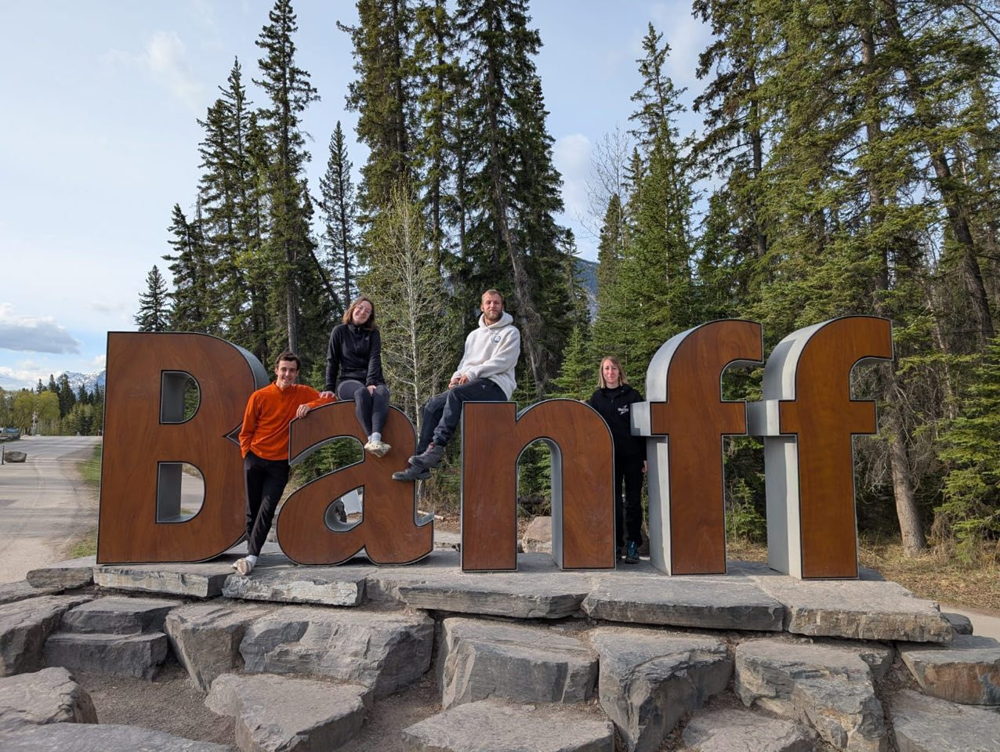
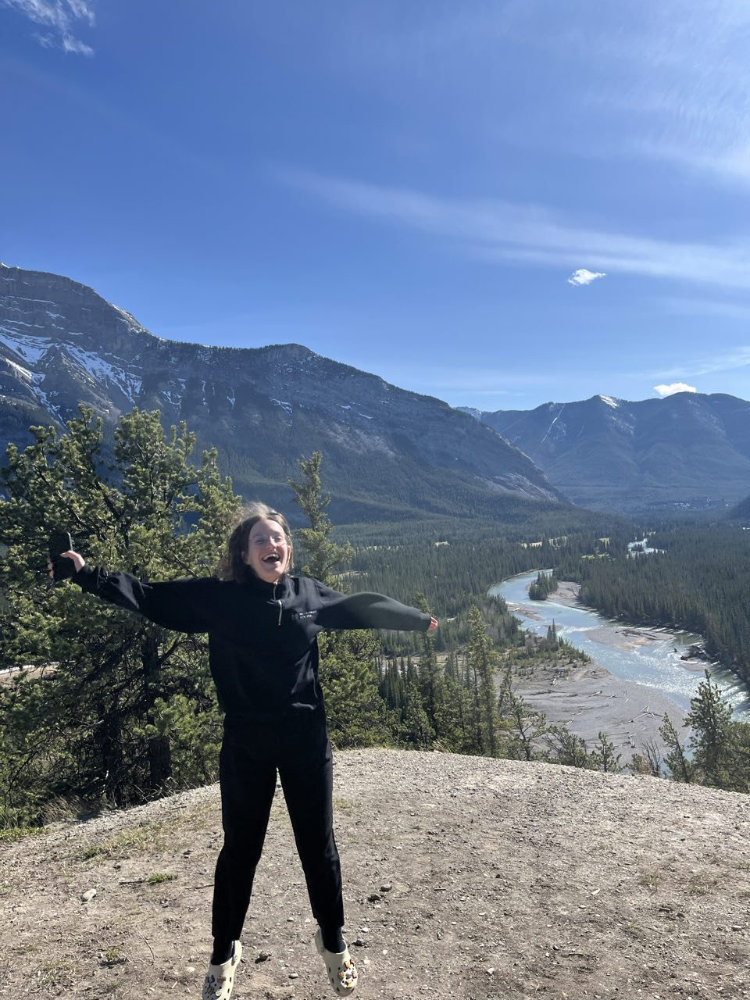
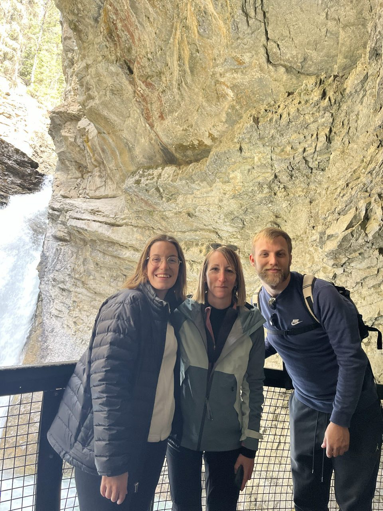
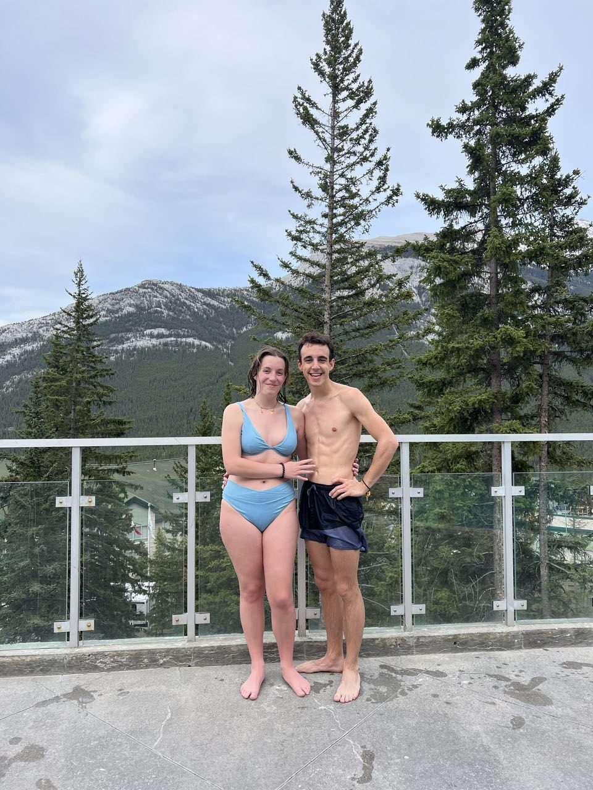

Étape 1 · Nature
Arrivée à Banff et sources chaudes
Après une journée bien remplie à rendre l'appartement de Montréal, arrivée tardive à Calgary pour retrouver Angie. Le lendemain, micro-visite de la ville avant de récupérer le camping-car et de filer dans les montagnes — pas encore arrivés qu'on aperçoit déjà 8 élans depuis le pare-brise ! Installation au camping puis direction le village de Banff, où absolument toutes les boutiques donnent envie, spray anti-ours en tête de liste des achats indispensables.
Le lendemain, randonnée le long du Johnston Canyon et de ses cascades à l'eau bleu vif, pique-nique en compagnie de tamias, puis un lac à l'eau émeraude glaciale où l'on croise des mouflons. Pour finir la journée, les sources chaudes de Banff — plus de 40 degrés, largement de quoi s'y attarder plus d'une heure.



